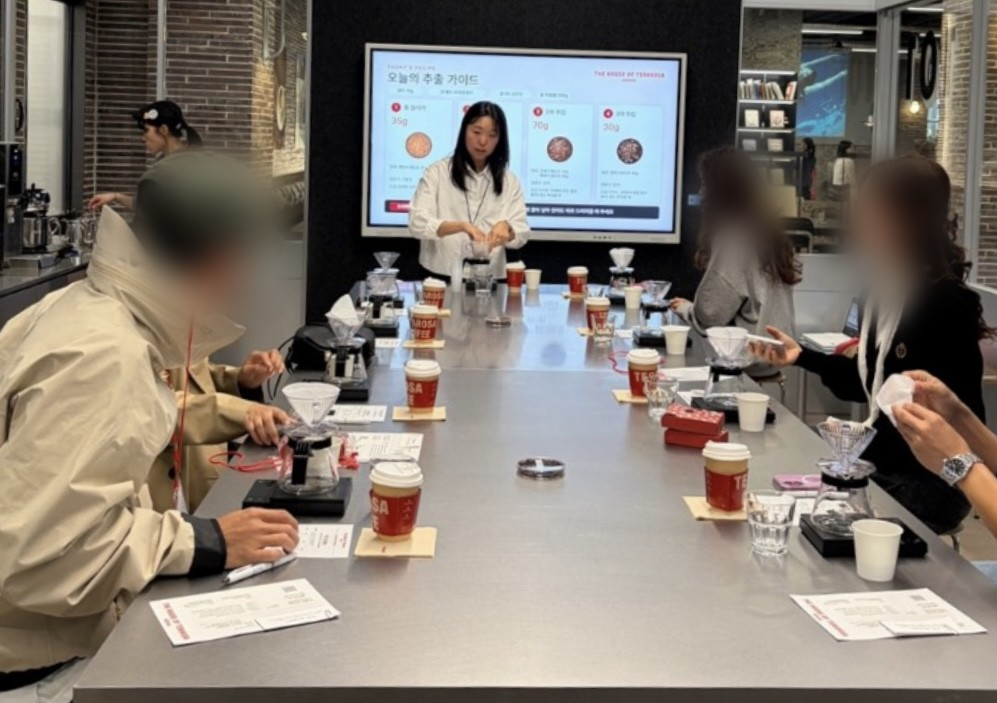
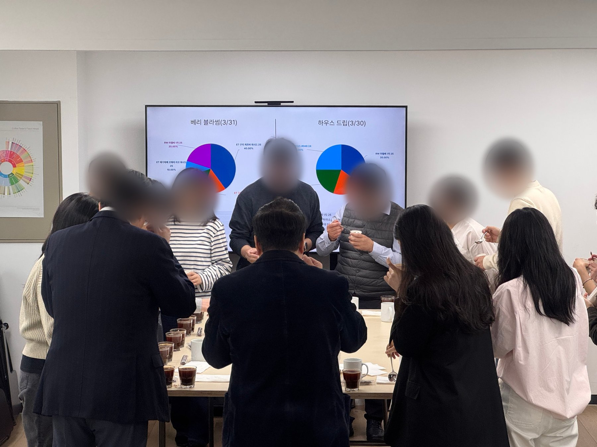
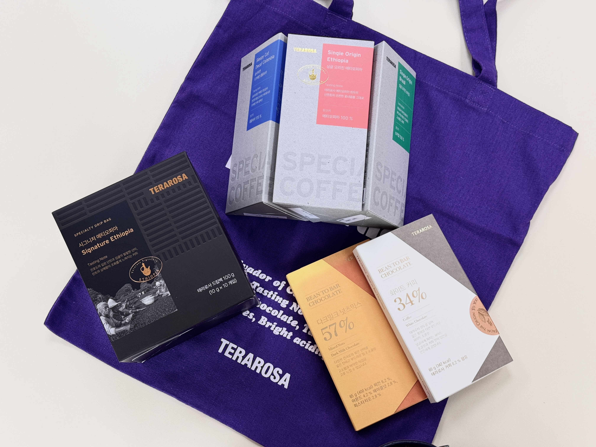

토스플레이스 Community Specialist 지원 · 박세미
이력서에 쓴 일들을
현장 사진과 화면으로
모았어요
궁금한 사례부터 골라 보세요.
이력서 p.2 · 사내외 행사를 준비부터 현장 운영까지 지원하는 일
사람이 모이는 자리를
처음부터 끝까지
채용 이후의 모든 과정을 하나의 행사처럼 운영해요
- 인계인사팀이 채용하고 입사 첫날 연락까지 맡아요. 첫 출근의 웰커밍부터는 교육팀이 맡고, 그 운영을 제가 처음부터 끝까지 해요.
- 준비기수별 인원과 참가자 명단, 일정을 관리하고, 교재와 준비물을 발주하고, 교육장을 세팅해요.
- 진행입문 교육과 직무교육 세션을 직접 진행해요. 3일차에는 웰컴 기프트세트를 전달해요.
- 끝난 뒤필기시험과 설문을 온라인으로 받아 교육 종료 당일에 결과를 정리하고, 만족도 응답으로 다음 기수를 고쳐요.
직접 맞이하고 교육한 신입, 연도별
단위는 명이고, 2026년은 10월까지예요. 누적 701명이에요. 파란 막대가 교육 사이클을 월 2회로 늘린 뒤예요.
실습을 못 하는 날엔, 퀴즈쇼로
인원이 많아 실습을 할 수 없던 기수에서, 이론만 길게 이어지지 않도록 먼저 누른 사람이 답하는 버저 웹앱을 만들어 50문제 퀴즈쇼로 진행했어요. 점 하나가 교육생 한 명이고, 25명 중 20명이 참여하여 1점 이상 얻어냈어요.

리더들이 모이는 분기 리더십 교육
전 매장 점장과 부점장이 분기마다 모이는 교육이에요. 분야별 전문가가 가르쳐야 한다는 원칙으로 리더십은 외부 강사에게, 품질은 사내 담당자에게 강의를 요청했어요. 점장들이 타 부서와 소통할 때 매출분석 용어와 숫자가 어렵다고 해서 관련 부서에 P&L 교육을 요청했고, 사무실에서 실제로 CPR이 필요한 일이 생긴 뒤에는 인근 소방서의 CPR 교육도 더했어요. 리더들이 모이는 자리라 식사까지 함께하도록 예약해요.
교육 뒤에는 다음에 받고 싶은 교육과 어떤 리더로 변화할지를 물었고, 자기 리더십이 오래된 방식이라는 걸 깨달았다는 후기가 나왔어요.
분기 리더 시상식
분기마다 열리는 리더·차기리더 시상식을 기획부터 현장 운영까지 맡고 있어요.
프리 오픈 행사 핸드드립 클래스
더 하우스 오브 테라로사 서울 프리 오픈 행사에서 인플루언서와 매거진 관계자를 대상으로 핸드드립 클래스를 강사로 진행했어요. 진행 요원 5명(본인 포함)과 함께 운영했고, 협력업체 VIP 고객 대상 커피 클래스도 진행했어요.

금요일 전사 커핑
- 매주 금요일 참석
- 20~30명
임원진 전원 참석 - 세션을 설명하는 사람
교육팀구성원
오래 참여한 임원이 신규 입사자에게
임원 한 분의 제안으로 다시 열린 세션을 맡아 목적을 다시 정하고, 블렌딩 정보 대신 구매팀에 요청해 받은 로스팅 일자별 생두 구성으로 설명하고, 기록이 남지 않던 세션에 커핑 기록 웹앱을 붙였어요.

이력서 p.3 · 굿즈와 비품을 챙기고, 문의와 반복 업무를 더 나은 방식으로 바꾸는 일
필요한 것을 채우고,
반복되는 일을 고쳤어요
입사 3일차의 웰컴 기프트세트
앞치마와 판매 상품을 자체 제작 에코백에 담아 신규 입사자에게 전달하도록 직접 기획하고 구성했어요.

발주하고 배포하는 일
- 사내 카페 원두직접 발주하고 관리해요.
- 현장 간식박스외부 업체를 통해 매달 현장 전체에 배포해요.
- 교재와 준비물교육마다 필요한 교재와 준비물을 직접 발주해요.
298쪽 브랜드 매뉴얼북

브랜드 매뉴얼북과 점장 매뉴얼북을 직접 기획하고 제작했고, 인쇄는 외부 인쇄 업체와 진행했어요.
실습 매뉴얼은 QR 하나로
매뉴얼북을 만들면서 여러 장의 사진과 표로 된 실습 매뉴얼을 QR 하나로 압축했어요. 직무교육이 끝난 뒤에도 현장에서 다시 보며 참고할 수 있게 실습 영상으로 만들었어요.
현장의 질문을 받아 연결하는 일
현장과 본사 사이의 커뮤니케이션 창구 역할을 맡아 왔어요. 신규 입사자가 입사 후 본사에 대해 묻는 질문은 교육팀이 받아 유관 부서에 전달해요. 고객 불만(VOC)은 건별로 추적해 반복되는 원인을 신규 입사자 교육으로 연결했어요.
휴대폰으로 참여하는 온보딩 웹앱

- 시험·설문 결과 정리
다음 날당일- 만족도 응답 중 온보딩 시스템 언급률
20%40%
종이로 걷어 채점하고 스캔하던 필기시험과 설문을 온라인으로 옮겨 저장부터 자동 채점까지 이어지게 만들었어요.
받은 피드백으로 평가 방식을 다시 만들었어요
- 알아챔제 평가 총평이 아무 말처럼 느껴진다는 지적을 받았어요. 교육이 끝난 뒤 기억에 의존해 쓰다 보니 문장마다 근거가 없다는 걸 인정했어요.
- 바꾼 것실습이 끝나면 교육생이 받은 피드백을 메뉴와 항목별로 폰에 직접 기록하는 웹앱을 만들었어요. 총평은 이 기록을 바탕으로 쓰고, 저는 검증만 해요.
기수마다 평가표를 쓰는 데 걸린 시간이에요. 이후 같은 지적은 다시 나오지 않았어요.


이력서 p.4 · 모인 목소리에서 반복되는 문제를 찾아 구조를 고친 일
모인 목소리로
구조를 고쳤어요
온보딩 구조, 전과 후
본사 교육은 4일 + 8일에서 3일 + 3일 + 2일로 나누고, 교육 사이클은 월 1회에서 2회로 늘렸어요.
현장 리더의 의견을 듣고 고친 커리큘럼
가장 따르지 않던 리더들을 한 명씩 만나 이유를 듣고 고쳤어요. “부족하면 제가 직접 가서 추가 교육하겠다”고 약속했고, 한 번 출동한 뒤 가장 부정적이던 리더가 협조적으로 바뀌었어요. 원본 문서가 아니라 구조를 다시 그렸어요.
반복되던 상품 누락 불만
점 하나가 상품 누락 불만 한 건이에요. 이전은 월 3~4건을 9개월로 환산했고, 이후는 2026년 1~9월 실제 건수예요.
교육 직후에도 반복된 품질 감점
칸 하나가 매장의 10%예요. 색이 칠해진 칸이 품질 C등급 이하 매장이에요.
호칭 ‘님’ 단일화
교육에 돌아온 신입 동기들이 서로를 ‘OO님’이라 부르는 걸 듣고 정착을 확인했어요.
구성원의 문장
제가 운영한 온보딩 서베이의 정성 응답과 현장 피드백 중 일부예요. 점수와 함께 문장을 모아 다음 기수를 고치는 데 썼어요.
온보딩 프로그램을 통해 테라로사의 브랜드 가치를 더 느낄 수 있었습니다.
신규 입사자 서베이처음 접하는 회사의 이미지가, 교육과 경험으로 더욱 좋아졌습니다.
신규 입사자 서베이여러 분야를 어떻게 하면 저희가 잘 이해할지 고민하신 흔적이 보여, 일원이 된 게 뿌듯했습니다.
신규 입사자 서베이신입이 빨리 자리 잡으니, 가르치는 사람과 배우는 사람이 아니라 함께 가는 동료가 됐어요.
현장 리더·팀원 피드백